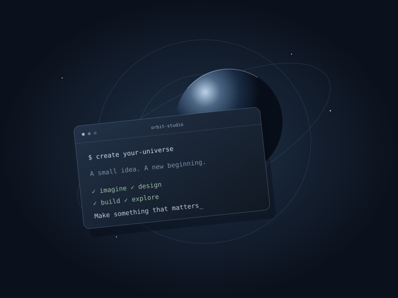
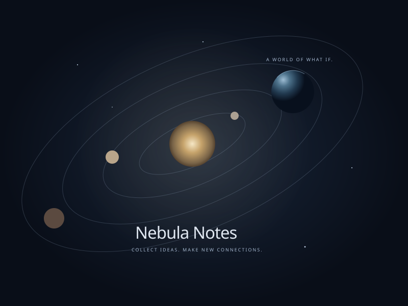
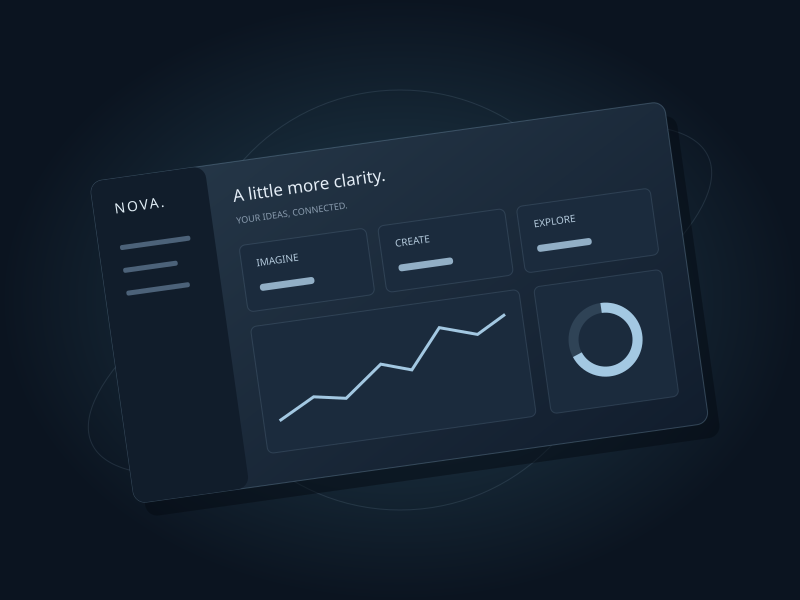

01 — CREATIVE WEBSAMPLE PROJECT

01 / ORBIT STUDIO
02 / NEBULA NOTES
03 / NOVA DASHBOARD 04 / ATLAS LAB 05 / SIGNAL SPACEDRAG TO EXPLORE
지구나 카드를 좌우로 드래그하거나 방향 버튼을 누르세요. 키보드 좌우 화살표도 사용할 수 있습니다. 모바일에서는 세로 스크롤과 가로 드래그를 구분합니다.
A SPACE FOR YOUR NEXT IDEA
Ideas in
orbit.
작은 아이디어에도, 넓은 우주가 필요하니까.
나만의 이야기로 채워 가는 포트폴리오.
BUILT WITH CURIOSITYMADE TO MAKE YOURSALWAYS IN MOTION
01 / ABOUT YOUMAKE THIS SPACE YOURS
Stay curious.
Keep creating.
이곳은 여러분을 소개하는 공간입니다.
어떤 문제를 풀고, 무엇을 만들고 싶나요?
관심 분야, 개발을 시작한 계기, 앞으로의 목표를 짧게 적어 보세요. 멋진 경력보다 나만의 시선과 만드는 과정을 담아 보세요. 아래 기술 스택도 직접 사용한 도구로 바꾸면 됩니다.
Explore the sample workORBIT
DEVELOPMENTBuild something useful
DESIGNMake it feel right
CURIOSITYKeep asking questions
YOUR INTERESTS. CONNECTED.EXAMPLE TOOLKIT
- HTML & CSS
- JavaScript
- Python
- React
- Figma
- Git
02 / PROJECT UNIVERSESAMPLE PROJECTS · REPLACE WITH YOUR OWN
Small ideas.
Infinite possibilities.
아래는 레이아웃을 보여 주는 예시 프로젝트입니다.
여러분이 만든 작품과 이야기로 바꿔 주세요.
YOUR NEXT PROJECT BELONGS HERE.Make a new connection
03 / YOUR JOURNEYEXAMPLE TIMELINE
Every step,
a new frontier.
나만의 배움과 도전으로 채워 주세요.
아래 내용은 작성 방법을 안내하는 예시입니다.
첫 번째 프로젝트
무엇을 만들었는지, 어떤 역할을 맡았는지 소개해 보세요.
프로젝트 예시새로운 도전
실제로 참여한 대회, 해커톤, 동아리 활동을 적어 보세요. 수상·순위는 확인된 경우에만 추가하세요.
활동 예시배우고 연결하기
공부한 기술과 적용한 경험, 앞으로 더 탐구하고 싶은 주제를 적어 보세요.
학습 예시
04 / MAKE CONTACTTHE NEXT CHAPTER STARTS HERE
GOOD IDEAS TRAVEL FURTHER TOGETHERLet’s explore
Let’s explore
together.
다음 아이디어가 시작되는 곳.
아래 예시 주소를 나의 연락처로 바꿔 주세요.